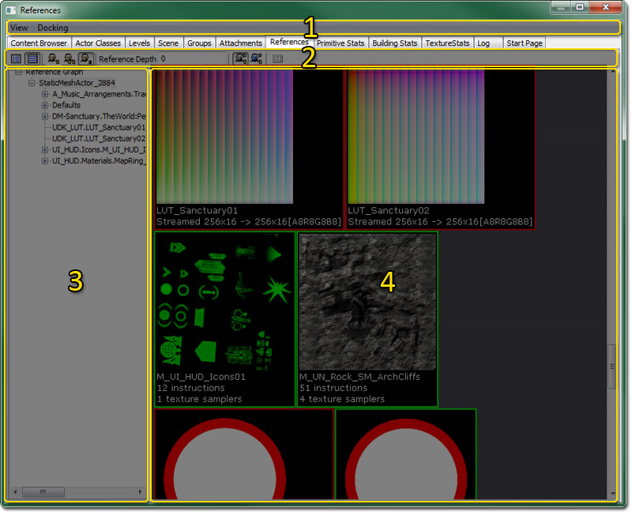
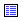
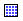
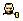
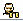
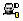
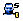
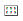

UDN
Search public documentation:
ReferencedAssetsBrowserReferenceCH
English Translation
日本語訳
한국어
Interested in the Unreal Engine?
Visit the Unreal Technology site.
Looking for jobs and company info?
Check out the Epic games site.
Questions about support via UDN?
Contact the UDN Staff
日本語訳
한국어
Interested in the Unreal Engine?
Visit the Unreal Technology site.
Looking for jobs and company info?
Check out the Epic games site.
Questions about support via UDN?
Contact the UDN Staff
引用资源的浏览器参考指南
概述
打开引用资源浏览器
引用资源的浏览器界面

菜单栏
视图
- Refresh（刷新） - 刷新 Actor 列表。
Docking（停靠状态）
- Docked(停靠) - 这个选项将会把当前浮动的浏览器停靠到主浏览器窗口中。在当前的浏览器处于停靠状态时，这个选项将处于选种状态。
- Floating(浮动) - 这个选项将会取消停靠浏览器到主要浏览器窗口的停靠状态，使它在自己的窗口中变为浮动的浏览器。在当前的浏览器处于浮动状态时，这个选项处于选中状态。
- Clone Browser(克隆浏览器) - 这个选项将会创建一个当前浏览器的副本。
- Floating Browser（浮动浏览器） - 这个选项将会移除或删除当前的浏览器。这个选项进行在有克隆的浏览器窗口存在时才启用。
工具栏
|  | 将资源查看方式更改为列表模式。 |
|  | 将资源查看方式更改缩略图模式。 |
|  | 只显示直接引用的资源。 |
|  | 显示所有引用的资源。 |
  | 允许用户设置一个自定义深度。 |
|  | 显示通过默认属性引用的资源。 |
|  | 显示通过脚本引用的资源。 |
|  | 显示通过类进行分组的引用资源。 |